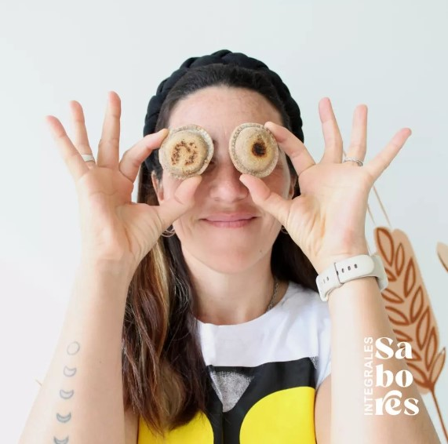

¿Cómo nació Sabores Integrales?
Soy Frida 🌈, luego de un tiempo de cambios (necesarios) estoy acá, llevando adelante nuestra Fábrica de alimentos Integrales.

Sabores nació hace ya 5 años. Es un emprendimiento que busca llevar a tu mesa alimentos llenos de amor y sabor, que es lo que mejor sé hacer. Amo cocinar, amo mostrarte que podes comer alimentos sanos y muy ricos, y es por eso que siempre decimos: "Cocinamos como nos gusta comer".
Agradezco a cada unx de ustedes que me permiten seguir creciendo como profesional, y, a través de mis alimentos, entrar a sus mesas. Eso es de mucho valor para mi. ¡Infinitas gracias!
Frida 💚